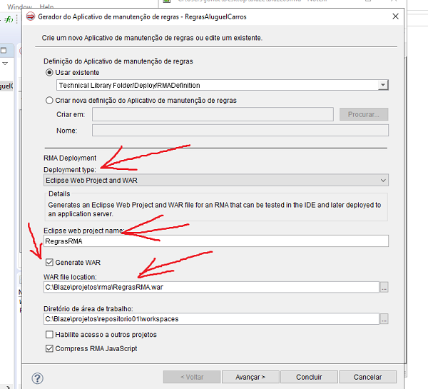
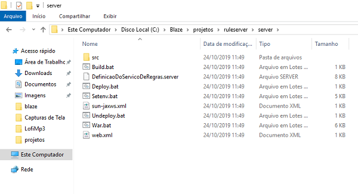

Deploy Toncat7
Observação: Os arquivos para instalação estão no seguinte repositório: Você precisará fazer o download de um arquivo .ZIP que está dentro do drive.
Nome do arquivo: TOMCAT7.ZIP
1) Descompacte os arquivos dentro da pasta C:\Blaze\projetos. Os arquivos deverá ficar da seguinte forma:
C:\Blaze\projetos\tomcat7
Configurando o StartServer.bat
Observação: O arquivo startServer.bat serve para facilitar o serviço do deploy no tomcar 2) O comando set JAVA_HOME=C:\Progra~1\Java\jdk1.8.0_211 deve estar apontando para o jdk do seu computador. No meu caso ele se encontra em: C:\Program Files\Java\jdk1.8.0_221.
3) Substitu-a o endereço do StartServer.
O comando set CATALINA_HOME=C:\Blaze\training\tomcat7 também deve ser alterado. Ele deve estar apontando para a pasta tomcat7 que você acabou de descompactar na pasta projetos.
Observação: A pasta do TOMCAT7 pode estar dentro de outra pasta TOMCAT7, depende do modo que foi descompatada
4) Substituir o endereço no arquivo StartServer.
Observação: O comando star C:\Blaze\training\tomcat7\bin\startup.batdeverá está referenciado corretamente.
A imagem a seguir mostra como ficaram as alterações:
5) Após as alterações de endereço, dê um duplo clique sobre o arquivo startServer e o tomcat7 irá rodar no http://localhost:8081/
Gerar um .WAR [Eclipse]
6) Gerar um arquivo WAR(Web Application Archive). Arquivo que permite a aplicação web do projeto.
Primeiro deve-se criar uma pasta chamada RMA dentro da pasta Projetos
7)Abra o eclipse e selecione o projeto (REGRAS....)
8)vá na aba Project e clique em Generate Rule Maintenance Application
9)Mude o RMA para Eclipse Web Project and WAR
10)Eclipse Web Project Name: strRegrasRMA
No caminho do War:
11) Na pasta RMA que criamos. Ex: C:\Blaze\projetos\rma.

next - Selecionar o projeto - Next - Selecionar o .jar - Finish.No Eclipse irá gerar um arquivo [RegrasRMA.war] na sua pasta RMA.
12) Clicar com o botão direito do mouse e (Close Project).

Executar o projeto .WAR [Toncat7]
13) Executar, no tomcat, o projeto RegrasRMA.war.
Duplo clique sobre o arquivo StartServer.bat que está na pasta C:\Blaze\projetos\tomcat7.
Observação: O tomcat7 irá rodar no http://localhost:8081
14) Após o servidor tomcat está ativo no localhost 8081, basta ir na pasta RMA e copiar o arquivo RegrasRMA.war para a pasta webapps:
C:\Blaze\projetos\tomcat7\tomcat7\webapps

Observação: Se o servidor tomcat estiver ativo, o arquivo RegrasRMA.war será descompactado automaticamente.
15) Após executar todo o processo de gerar o arquivo.WAR e descompactá-lo na pasta webapps do tomcat, basta ir no navegador que o tomcat e digitar o nome do projeto [RegrasRMA] como na imagem abaixo.
16)Isso irá gerar o RMA do Blaze no tomcat7. Basta logar e começar a criar suas regras de negócio.
Deploy [Rule Server] - Configurações
Iremos gerar um Deploy de serviço de regras, isto é, iremos gerar uma aplicação pronta para ser executada.
17) Primeiro, você deverá criar uma pasta com o nome de RuleServer dentro da pasta projetos.
18)Vá no Eclipse e na pasta Deploy deverá ter três arquivos de configuração.
Primeiro arquivo de configuração: [Rule Service Definition]
New - Deployment Entities - Rule Service Definition.
19) Segundo arquivo de configuração: [Deployment Definition]
New - Deployment Entities - Deployment Definition.
20) Terceiro arquivo de configuração:
New - Deployment Entities - System Definition.
Na aba de DefinicaoDoSistema:
Deploy [Rule Server] - Gerando Arquivos
Copiar o caminho da pasta ruleserver que você criou. No meu caso, a pasta está em: C:\Blaze\projetos\ruleserver.
21) Vá para o Eclipse, selecionar o projeto principal e ir na aba Project:
Generate Rule Service Deployment [Gerar Implementação de Serviço de Regras]
Obs: o Eclipse irá encontrar as configurações que acabamos de fazer. [Tópico - Deploy [Rule Server] - Configurações].
Next - Next - Selecionar ou colar o caminho da pasta ruleserver - Next.
Nesta parte, basta observar se os arquivos selecionados são do tipo aquivo.bat
Finish.
Deploy [Rule Server]
Agora iremos configurar alguns arquivos que foram gerados pelo processo anterior, na pasta Server. Lembrando que esta pasta se encontra dentro da pasta ruleserver.

22) Ir na pasta ruleserver/server.
23) Abrir o arquivo Setenv.bat com o notepad++
24) Você deve referenciar corretamente os caminhos de:
Observe a imagem a seguir:
Acrescentar o seguinte código na linha 99 [set CLASSPATH=%CLASSPATH%;C:\Blaze\projetos\bom-Carro3.jar;]
Salvar as alterações
Configurando o Script [War.bat]
25) Abrir o arquivo War.bat no notepad++
Salvar as alterações.
Não se esqueça de salvar as alterações!
26) Rodar o Script [Setenv]
Isso irá abrir o cmd na pasta server
Basta digitar Setenv.bat e pressionar enter para executar o arquivo que acabamos de configurar.
Rodando o Script [Build.bat]
27) Ainda no cmd do windows (deve ser na mesma janela que você digitou o Server.bat)
Este comando irá compilar algumas classes.
Rodando o arquivo [War.bat]
28) Ainda no cmd do windows (Deve ser na mesma janela que você digitou o Server.bat e Build.bat)
Digite War.bat e aperte enter.
Este comando irá gerar uma série de arquivos, inclusive um arquivo.war dentro da pasta C:\Blaze\projetos\ruleserver\server\build. Para este projeto, o nome do arquivo ficou como: DefinicaoDoServicoDeRegrasServer.war
Gerando uma aplicação Toncat
Startar o Toncat7 pelo arquivo startServer.bat (dando um duplo clique) que está na pasta C:\Blaze\projetos\tomcat7
29) Copiar o arquivo.war [DefinicaoDoServicoDeRegrasServer.war] da pasta C:\Blaze\projetos\ruleserver\server\build para a pasta C:\Blaze\projetos\tomcat7\tomcat7\webapps
30) Ir na pasta C:\Blaze\projetos\ruleserver e abrir o arquivo DeploymentDocumentation.html dando um duplo clique sobre ele.
http://localhost:8080/DefinicaoDoServicoDeRegrasServer/DefinicaoDoServicoDeRegrasService?wsdl
http://localhost:8081/DefinicaoDoServicoDeRegrasServer/DefinicaoDoServicoDeRegrasService?wsdl
Sua aplicação retornará um XML assim:
Testando a Aplicação no SoapUI
Criar uma pasta [workspaceSoap] dentro da pasta Projetos.
31) Instalar o SoapUI
Baixe o SoapUI [SoapUI-x32-5.5.0.exe] do Repositório que disponibilizei:
32) No SoapUI, vá em:
File - New Workspace - dar o nome de workspaceSoap
Ainda no SoapUI:
File - New Soap Project.
Atenção: colar o link WSDL que geramos para o tomcat anteriormente:
http://localhost:8081/DefinicaoDoServicoDeRegrasServer/DefinicaoDoServicoDeRegrasService?wsdl
O Soap importará o serviço e gerará um request. [entrypoint]
Considerações finais
Como você podê ver, nossa aplicação é bem simples e apresenta várias inconsistências como, por exemplo, possuir dados que não estão sendo utilizados. Mas nosso objetivo era apenas introduzir o Blaze.
Esta aplicação recebe dois valores principais (idade e renda) e retorna Negado caso a idade seja menor do que 18 ou a renda menor do que R$ 1000. Ou seja, não estão aptos a alugar um carro.
No exemplo acima, a idade é de 22 anos e a renda é de R$ 5420, ou seja, é um cliente apto a alugar um carro.
Já no exemplo abaixo, a idade é de 16 e a renda de R$ 5420. Mesmo a renda sendo maior do que R$ 1000, o resultado é Negado, pois a idade é menor do que 18.
Mais Tutoriais - Blaze
2º Etapa - Utilizando o RMA :
3º Etapa - Deploy no Tomcat :
4º Etapa - Avançado - Em construção